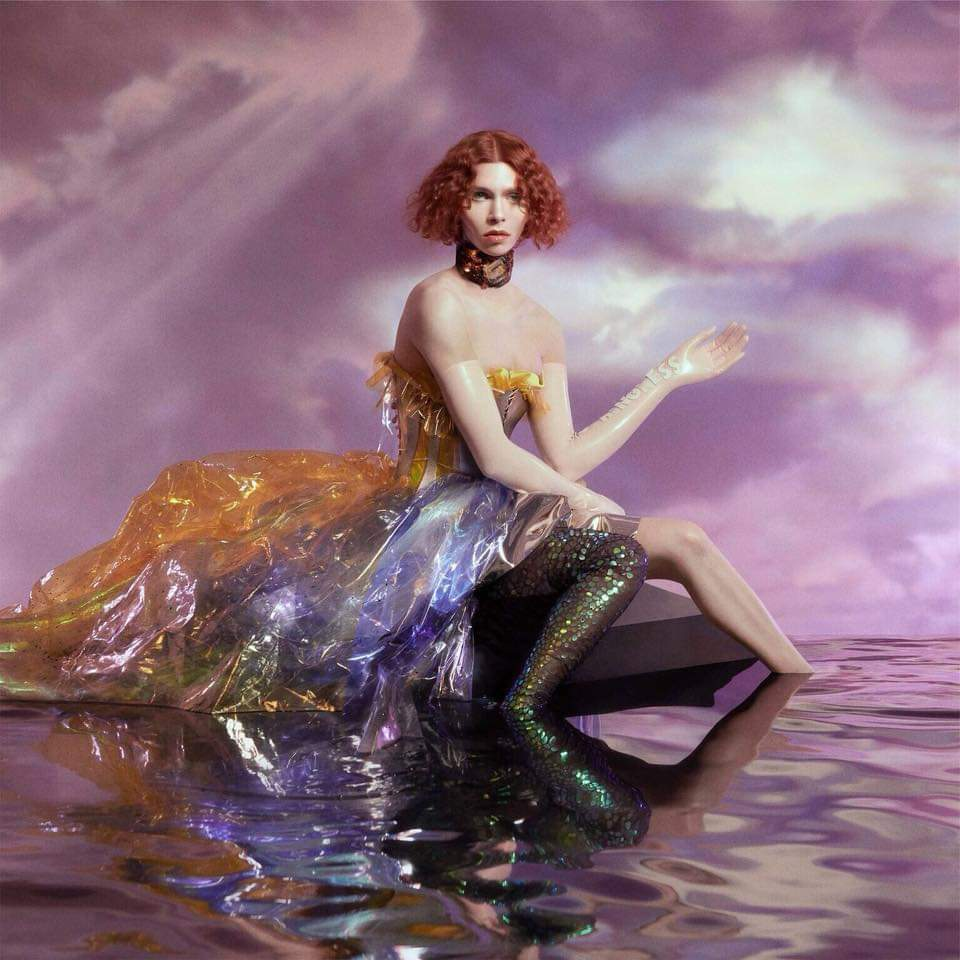

Lançamento:
15 de junho de 2018
Gênero(s):
Avant-pop - Eletrônico - industrial
Duração:
39:55
Idioma(s):
Inglês
Gravadora:
Soapworld
Produção:
Sophie
Crítica Musical
Da artista misteriosa que surgiu com o lançamento de Bipp e Lemonade, para uma das produtoras mais requisitadas do pop contemporâneo. Em um intervalo de poucos anos, a escocesa Sophie Xion deixou o estúdio caseiro onde vinha colaborando com Charli XCX e demais representantes do coletivo PC Music, para assinar canções em parceria com Madonna (Bitch, I’m Madonna), Vince Staples (Yeah Right) e demais nomes de peso da música. Um preparativo para a explosão de melodias tortas, ruídos eletrônicos e vozes carregadas de efeito que tomam conta do primeiro álbum de estúdio da artista, Oil of Every Pearl’s Un-Insides (2018, Transgressive / Future Classics). Concebido em um intervalo de quase dois anos, entre as brechas de outros projetos assinados por SOPHIE — como a produção do novo álbum da dupla Let’s Eat Grandma —, o registro de nove faixas dá um visível salto criativo em relação ao material entregue na coletânea Product, de 2015. Onde antes brotavam composições aleatórias, sempre guiadas pelo desejo da artista em brincar com a música pop, hoje borbulham criações tão experimentais quanto melódicas e conectadas conceitualmente. Como indicado no próprio título do trabalho, Oil of Every Pearl’s Un-Insides, um virundum de “I love every person’s insides” — em português, “eu amo o interior de cada pessoa” —, cada fragmento do presente álbum se projeta não apenas como um reflexo da alma de SOPHIE, mas olhar minucioso sobre as angústias, medos e sentimentos que se escondem no interior de cada indivíduo. Versos que se projetam como um grito de liberdade e reafirmação pessoal, como um produto das experiências acumuladas pela artista durante o período de transição de gênero a que se submeteu recentemente. “Eu posso ver a verdade através de suas mentiras / E mesmo depois de todo esse tempo / Apenas saiba que você não tem nada a esconder / Tudo bem chorar“, canta na inaugural It’s Okay to Cry, um ato de profunda transformação e entrega sentimental, conceito que orienta o trabalho durante toda sua execução. Composições guiadas pela força das emoções e versos, cuidado que se reflete na completa melancolia de Is It Cold in the Water?, música que lembra Björk em Homogenic (1997), porém, sempre preservando o pop torto aprimorado por SOPHIE nos últimos anos. O mesmo refinamento entristecido dado à canção ecoa com naturalidade em outros momentos do trabalho, como em Infatuation e na extensa Whole New World / Pretend World, efeito da permanente colaboração com a cantora Cecile Believe (Mozart’s Sister), dona da voz nos momentos de maior exposição e força lírica. Claro que a mudança de direção e vívido amadurecimento poético não interfere na produção de músicas tão caóticas quanto o material apresentado em Product. São ruídos metálicos, quebras e sobreposições rítmicas que bagunçam a experiência do ouvinte de forma propositada. Pensado para além das próprias canções, Oil of Every Pearl’s Un-Insides faz de cada elemento que o rodeia um reflexo do fino amadurecimento criativo de SOPHIE. Da imagem de capa, passando pelo encarte e conceito plástico incorporado à identidade visual dos clipes — como em Faceshopping e It’s Okay to Cry —, tudo parece minuciosamente planejado e amarrado esteticamente. Camadas de pura sofisticação e desconstrução do pop tradicional, como uma imensa colagem de referências que sintetiza a identidade mutável de SOPHIE.